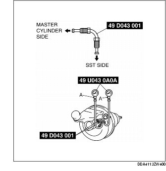

Proportioning valve inspection
1. Disconnect the brake pipe of the master cylinder, install the SST (49 D043 001) to the master cylinder as shown in the figure.

2. Connect the SST as shown in the figure.
3. Disconnect the brake hose of rear brake, install the SST (49 D043 001) to the brake hose (master cylinder side) as shown in the figure.

4. Connect the SSTs as shown in the figure.
5. Bleed the air from the SSTs and brake line using air bleed valve A of the SST.
6. Inspect the rear brake fluid pressure with the front brake fluid pressure adjusted to the following level.
Proportioning valve fluid pressure (without ABS)- Rear brake fluid pressure when front brake fluid pressure at 4,500 kPa {45.89 kgf/cm2, 652.5 psi}: 3,100 kPa {31.61 kgf/cm2, 449.5 psi}
- Rear brake fluid pressure when front brake fluid pressure at 10,000 kPa {101.97 kgf/cm2, 1,450 psi}: 4,750 kPa {48.44 kgf/cm2, 688.8 psi}